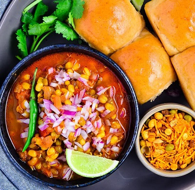

Misal Pav

Discription
Misal is a Marathi word that means "mixture." The dish is a combination of different flavors and textures, with
the spicy curry providing a contrast to the soft pav. The farsan adds a crunchiness, and the vegetables add a
freshness.
Misal pav is often served with a squeeze of lemon juice and a sprinkling of cilantro. It is a hearty and filling
dish that is perfect for breakfast, lunch, or dinner.
Here are some of the key ingredients in misal pav:
- Sprouted moth beans (Matki)
- Vegetables (such as onions, tomatoes, potatoes, and peas)
- Farsan (fried savory mixture)
- Pav (soft, round bread rolls)
- Lemon juice
- Cilantro
Here are some of the steps involved in making misal pav:
- Soak the moth beans overnight.
- Drain the moth beans and cook them until they are soft.
- Fry the vegetables until they are softened.
- Make the farsan by frying a variety of ingredients, such as peanuts, onions, chilies, and spices.
- Combine the cooked moth beans, vegetables, and farsan in a pot.
- Add water or stock to the pot and bring to a boil.
- Reduce the heat and simmer for 10-15 minutes, or until the flavors have melded together.
- Serve the misal with pav, lemon juice, and cilantro.